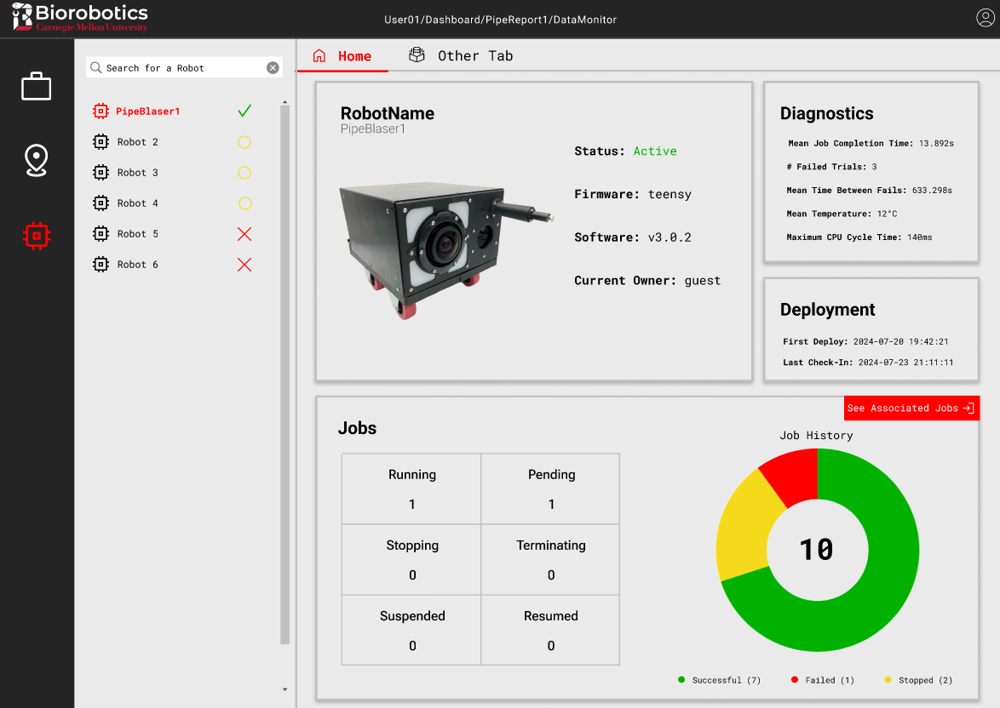
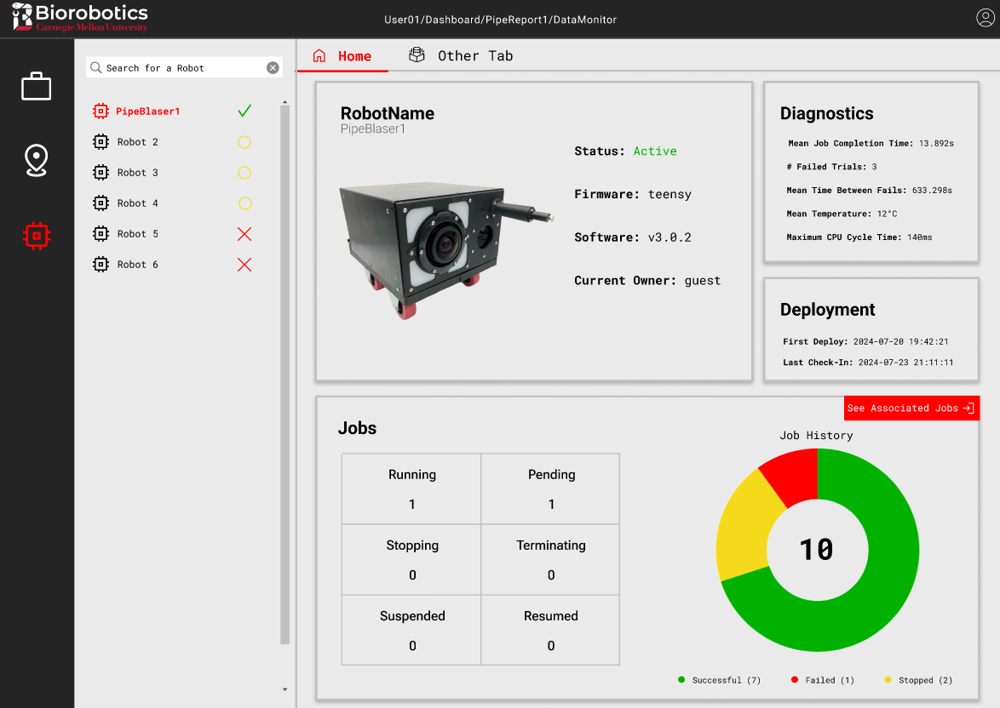

This project ("Confined Space Mapping Module for In-Pipe Repair Robots", PL's: Howie Choset, Lu Li) was funded by the U.S. Department of Energy (DOE) Advanced Research Projects Agency - Energy (ARPA-E) REPAIR Program. It aimed to prevent dangerous pipe explosions by creating a robot that could traverse the inside of pipes while inspecting them and repairing any damages. To view, annotate, and export the inspection data, business professionals (asset owners, civil engineers, inspectors, etc.) would use a web application called the Pipe Portal. My task was to redesign and rebuild the Pipe Portal to improve its usability and overall visual appeal.
UI/UX Design
User Research
Web Development
I first met with the lead of the project to learn more about the portal's current state and its functionality. She walked me through the portal's main features, including an interactable 2D map showing the locations of pipe systems, annotation features to mark defects the robots found in the pipes, and a tab to view data about the pipes, robots, and inspection data the robots had gathered while performing jobs.

Afterwards, I conducted my own thorough analysis of the portal to identify any UX issues and brainstorm potential solutions. The identified
areas of improvement included:
Something I would have done differently before the ideation phase is build more empathy for users. I could've interviewed users of the applications, or even observed them performing tasks on the portal or other existing pipe portals used by business professionals. A first-hand account of their pain points and needs when using the portal would've been invaluable when making design decisions. Unfortunately, the only person I could discuss the portal with was my project lead, who was not a user nor a designer. Nevertheless, having a second set of eyes to bounce ideas off of helped immensely, and got me experience communicating design ideas to non-designers.
Now that I had a solid understanding of the portal and what to focus on for the redesign, I felt confident enough to
begin brainstorming ideas. For inspiration, I turned to Dribbble .
.

From there, sketches helped quickly visualize ideas for the structure of individual pages and the overall flow architecture.

Again, user input would've really benefitted me at this point. Getting their insights on my sketches and ideas would've been invaluable for the next step.
With the sketches finalized, I had some solid structures and a low fidelity mock-up. The next step was to start nailing down the aesthetics and create something higher fidelity in Figma. This ended up being a long cycle of discussing design decisions with my project lead, then iterating, and then refining.
At the point when I felt the design was solid enough, I pushed for some user testing before moving on to development.
I proposed a form of heuristic evaluation, where I would present the prototype to a group of participants and have them perform tasks. At the same time, they would
make note of how strongly the prototype met a heuristic, ranking how strongly the heuristic was met from 1=not met to 5=strongly met. When everyone was done,
we would convene to discuss how they ranked each heuristic, what issues they faced, and what suggestions they had for improvement.
This method would allow me to get feedback from a group of users quickly, and help users have metrics to evaluate the design more concretely.
As for the heuristics, I based them off Nielsen's 10 Usability Heuristics for User Interface Design, but modified or removed some to better
fit the portal. For example, I removed "Help and Documentation" since I had not designed any related features into this iteration of the prototype.
You can view the full set of heuristics in the handout I prepared for participants here.
I ended up recruiting 6 people from the lab. My project lead sat in the session to observe. Unfortunately, only 1 of the particpants had used the portal before, and the business professionals who were invited did not end up attending. Nevertheless, we got some strong insights. Notably, we realized that the map wasn't actually as important as we thought. It turns out that our users would likely fall into 2 categories: those who wanted to inspect and annotate data in jobs, and those who just wanted a report of the inspection data to export and share. Thus, the main feature of the portal would be inspecting job data, annotating them, and exporting them. To resolve this, I restructured the flow architecture so that the first page in the prototype would be the page with the table of jobs, rather than the map. It also required some major structural changes to the design of the job data, and some thought into the new role the map would play. We came to realize that it was more of a secondary feature for users to visualize where pipes, robots, observations, and jobs were located.
After making the changes, I felt confident enough in the prototype to move on to development. Check it out here!


 

Using the prototype, I began development. With limited time left, I focused on coding the most complex and important page: the job data page. I turned to Next.js for the framework due to its ease of use, built-in routing, and my past experience with it. I successfully built a functional version of the job data page with simulated data. Check it out in the video below!
Over the summer, I got a lot of hands on experience with the full design process. From research, to ideation, to prototyping, to user testing, and finally development, I learned a lot about what it takes to design a web application and a strong user experience in general. At the same time, I learned how important user input is to a project. At nearly every phase, it would've expedited the process and improved the final product even more.
But for my first HCI real-world project, I'm proud of what I managed to accomplish. I hope my work benefits whoever takes over the project and its future users. Meanwhile, I'll be carrying this experience into my Master's studies in HCI at the Georgia Institute of Technology in Atlanta!